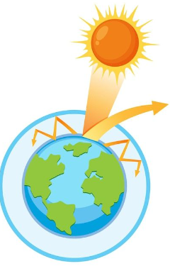
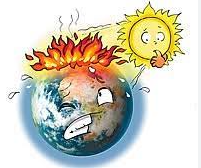
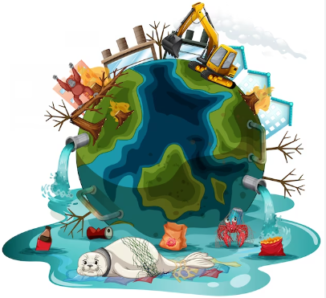
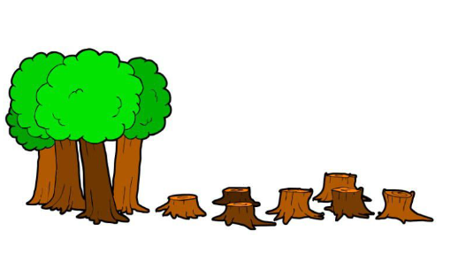
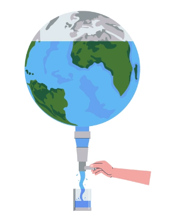
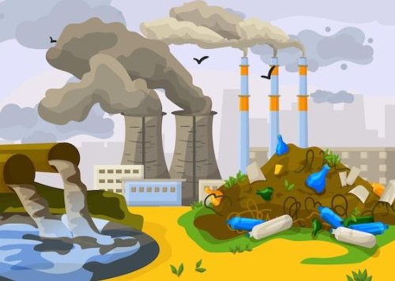

El medio ambiente tiene capacidad para aportar gran cantidad de residuos, pero si se abusan de ellos, se generan problemas medioambientales. Podemos destacar:
1. El cambio climático. La acumulación de gases, derivados fundamentalmente de la quema de carbón y petróleo, que son contaminantes, hacen que la Tierra se vaya calentando, causando así el efecto invernadero.
Esa concentración de gases provoca que parte de la energía que transmite el sol vuelva a la Tierra ya que imposibilitan que salga al espacio (rebote). Conlleva un incremento de las temperaturas, causando efectos negativos en el sector agrícola, ganadero, el agua y genera inundaciones por la elevación del nivel del mar, además del riesgo de desertización.
Los países con abundantes recursos económicos son los culpables principales, ya que el 7% de las naciones más ricas emiten la mitad de todo el dióxido de carbono producido.

2. El deterioro de la capa de ozono. Los gases han generado también una reducción de la capa de ozono, por lo que los rayos solares entran con menor dificultar en la atmósfera. Los efectos son altamente perjudiciales para las personas, la vegetación y los animales acuáticos.

3. La contaminación. Se debe a la incapacidad del medio ambiente de hacer frente a la gran cantidad de residuos que generan las personas, provocando daños en tierra, aire y agua. Las consecuencias van desde enfermedades a muertes y desequilibrios en los ecosistemas.

4. La pérdida de biodiversidad. Es consecuencia de una actividad de pesca y caza abusiva, el vertido de químicos en el suelo agrícola y la sobreexplotación de los bosques. Esto ha generado la desaparición de ciertos animales y plantas.

5. El agotamiento de los recursos naturales. La sociedad actual tiene un nivel de consumo que está reduciendo las reservas del planeta. Si continuamos así, no tardarán en darse problemas con materias primas básicas, tanto si son renovables (por ejemplo, la madera) como si no lo son.

6. Los residuos. La producción y el consumo generan abundantes residuos. Muchos lugares y mares se han convertido en vertederos, lo que al final ocasiona perjuicio en la salud de las personas.
